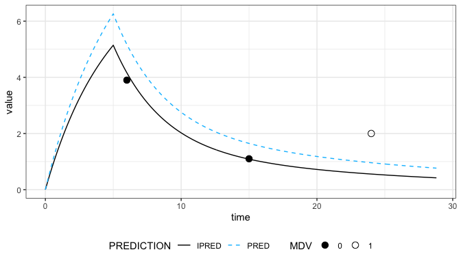
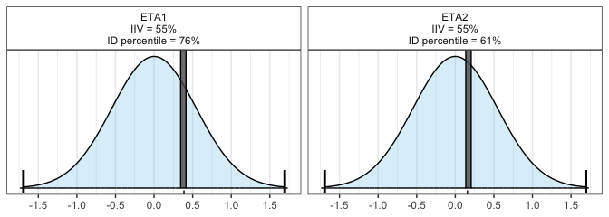
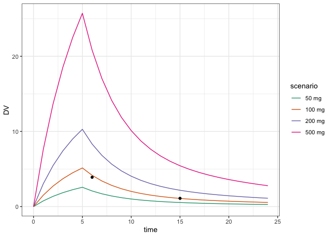

mapbayr is a free and open source package for maximum a posteriori bayesian estimation of PK parameters in R. Thanks to a single function, mapbayest(), you can estimate individual PK parameters from:
- a population PK model (coded in mrgsolve),
- a data set with concentrations (NM-TRAN format).
It was designed to be easily wrapped in shiny apps in order to ease model-based Therapeutic Drug Monitoring, also referred to as Model-Informed Prediction Dosing (MIPD).
Installation
mapbayr is available on CRAN. You can install the development version from github by executing the following code in R console.
install.packages("devtools")
devtools::install_github("FelicienLL/mapbayr")mapbayr relies on mrgsolve for model implementation and ordinary differential equation solving which requires C++ compilers. If you are a Windows user, you would probably need to install Rtools. Please refer to the installation guide of mrgsolve for additional information.
Example
1) Properly code you model
code <- "
$PARAM @annotated
TVCL: 0.9 : Clearance
TVV1: 10.0 : Central volume
V2 : 10.0 : Peripheral volume of distribution
Q : 1.0 : Intercompartmental clearance
$PARAM @annotated @covariates
BW : 70 : Body weight (kg)
$OMEGA 0.3 0.3
$SIGMA
0.05 // proportional
0.1 // additive
$CMT @annotated
CENT : Central compartment (mg/L)[ADM, OBS]
PERIPH: Peripheral compartment ()
$TABLE
double DV = (CENT/V1) *(1 + EPS(1)) + EPS(2);
$MAIN
double CL = TVCL * exp(ETA(1)) * pow(BW / 70, 1.2) ;
double V1 = TVV1 * exp(ETA(2)) ;
double K12 = Q / V1 ;
double K21 = Q / V2 ;
double K10 = CL / V1 ;
$ODE
dxdt_CENT = K21 * PERIPH - (K10 + K12) * CENT ;
dxdt_PERIPH = K12 * CENT - K21 * PERIPH ;
$CAPTURE DV CL
"
my_model <- mcode("Example_model", code)2) Bring your dataset
my_data <- data.frame(ID = 1, time = c(0,6,15,24), evid = c(1, rep(0,3)), cmt = 1, amt = c(100, rep(0,3)),
rate = c(20, rep(0,3)), DV = c(NA, 3.9, 1.1, 2), mdv = c(1,0,0,1), BW = 90)
my_data
#> ID time evid cmt amt rate DV mdv BW
#> 1 1 0 1 1 100 20 NA 1 90
#> 2 1 6 0 1 0 0 3.9 0 90
#> 3 1 15 0 1 0 0 1.1 0 90
#> 4 1 24 0 1 0 0 2.0 1 903) And estimate !
my_est <- mapbayest(my_model, data = my_data)As building dataset into a NM-TRAN format can be painful, you can use pipe-friendly obs_rows(), adm_rows() and add_covariates() functions in order to pass administration and observation information, and perform the estimation subsequently.
4) Then, use the estimations
The results are returned in a single object (“mapbayests” S3 class) which includes input (model and data), output (etas and tables) and internal arguments passed to the internal algorithm (useful for debugging). Additional methods are provided to ease visualization and computation of a posteriori outcomes of interest.
print(my_est)
#> Model: Example_model
#> ID : 1 individual(s).
#> OBS: 2 observation(s).
#> ETA: 2 parameter(s) to estimate.
#>
#> Estimates:
#> ID ETA1 ETA2
#> 1 1 0.3872104 0.1569604
#>
#> Output (4 lines):
#> ID time evid cmt amt rate mdv DV IPRED PRED CL BW ETA1 ETA2
#> 1 1 0 1 1 100 20 1 NA 0.000 0.000 1.79 90 0.387 0.157
#> 2 1 6 0 1 0 0 0 3.9 4.162 5.174 1.79 90 0.387 0.157
#> 3 1 15 0 1 0 0 0 1.1 1.087 1.647 1.79 90 0.387 0.157
#> 4 1 24 0 1 0 0 1 2.0 0.556 0.959 1.79 90 0.387 0.157
plot(my_est)
hist(my_est) 
# Easily extract a posteriori parameter values to compute outcomes of interest
get_eta(my_est)
#> ETA1 ETA2
#> 0.3872104 0.1569604
get_param(my_est, "CL")
#> [1] 1.79217
# The function `use_estimates()` updates the model object with estimated parameter values (ETA) and covariates to simulate like with a regular mrgsolve model
updated_model <- my_est %>%
use_estimates()
# Define simulation scenarios (let your inspiration flow) and simulate
scenarios <- tibble::tibble(
ID = 1, time = 0, evid = 1, cmt = 1,
amt = c(50, 100, 200, 500),
rate = amt/5,
scenario = forcats::as_factor(paste0(amt, " mg"))
)
simdat <- data.frame()
for(i in unique(scenarios$scenario)){
simdat <- updated_model %>%
data_set(subset(scenarios, scenario == i)) %>%
mrgsim(output = "df", recover = "scenario") %>%
bind_rows(simdat)
}
# See the results
library(ggplot2)
simdat %>%
ggplot(aes(time, DV)) +
geom_line(aes(color = scenario)) +
geom_point(data = my_data %>% dplyr::filter(mdv == 0)) +
theme_bw() +
scale_colour_discrete(palette = scales::pal_brewer(palette = "Dark2"))
Development
mapbayr is under development. Your feedback for additional feature requests or bug reporting is welcome. Contact us through the issue tracker.
Features
mapbayr is a generalization of the “MAP Bayes estimation” tutorial available on the mrgsolve blog. Additional features are:
- a unique function to perform the estimation:
mapbayest(). - accepts a large variety of structural models thanks to the flexibility of mrgsolve
- flexibility with random effects on parameters, accepting both inter-individual and inter-occasion variability.
- additive, proportional, mixed or exponential (without prior log-transformation of data) residual error models.
- estimate from both parent drug and metabolite simultaneously.
- fit multiple patients stored in a single dataset.
- functions to easily pass administration and observation information, as well as plot methods to visualize predictions and parameter distribution.
- a single output object to ease post-processing, depending on the purpose of the estimation.
- several optimization algorithm available, such as “L-BFGS-B” (the default) or “newuoa”.
- handling data below the limit of quantification.
- estimate only a subset of ETAs defined in the model.
- flatten priors to favor observed data.
Performance
Reliability of parameter estimation against NONMEM was assessed for a wide variety of models and data. The results of this validation study were published in CPT:Pharmacometrics & System Pharmacology, and materials are available in a dedicated repository. If you observe some discrepancies between mapbayr and NONMEM on your own model and data, feel free to contact us through the issue tracker.